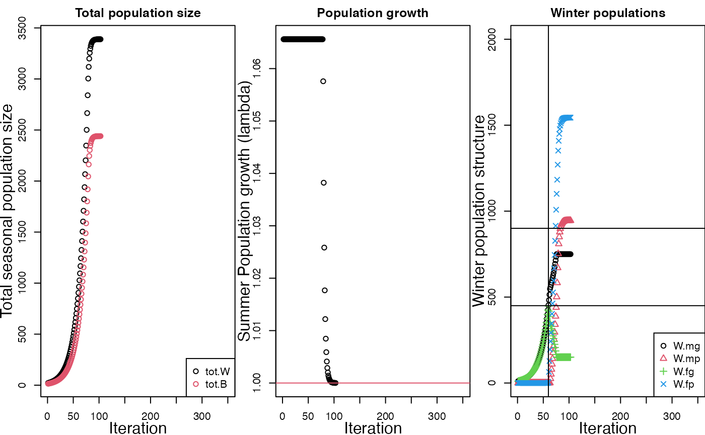
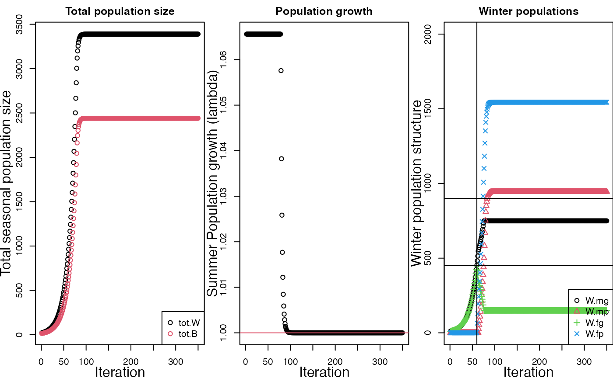
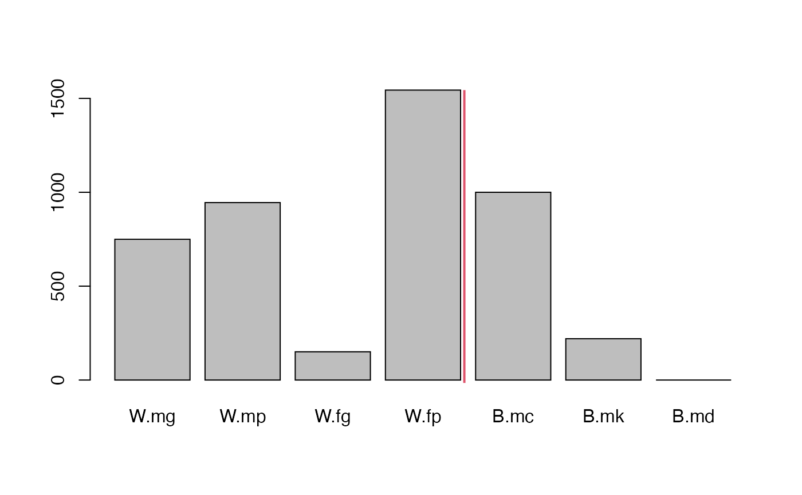

d-the_runFAC_command.RmdIn the redstart package, a single run of a the full-annual cycle (FAC) is done using the runFAC() function. runFAC() is the engine underlying the core of the entire redstart package. You’ll rarely have to actually use this function except for diagnostic purposes. However, its worthwhile to know what its doing to understand how higher-level output is being generated.
The user gives this function 3 bundles of information:
runFAC() then builds all of the matrices that describe the FAC, plugs in the starting population state, and turns the crank on the model for either a given number of iterations (the default is 300) or, if specified, until a stability criteria is met.
runFAC() can be set to run and either keep track of everything that happens during the entire model run (save.ts = T, the default), or just the final time point which (save.ts = F); …
TODO: what is this fragment of a sentence for? if the model reach equilibrium, represents that stable population size, stage, and sex structure of the model during each time point.
Examining the entire time series (“ts”) of the model is mostly useful for understanding what the model does and for diagnostics purposes, e.g. to makes sure it is reaching equilibrium. For most subsequent analyses just the equilibrium state is needed; a typical analysis of a FAC model involves running the model many times while systematically varying one or two key parameters to understand how they impact the equilibrium population state.
In this vignette I’ll demonstrate what runFAC() does and what the output of a single run the FAC looks like. In subsequent vignettes we’ll using a wrapper function, runFAC_multi() to run the model repeatedly to equilibrium while varying parameters such as carrying capacity (K). When doing simple explorations of how the function works I’ll set return.output = F so that the full output dataframe isn’t printed out into the R terminal.
The most recent version of redstart is available from github and can be downloaded directly using the devtools package
#load devtools
library(devtools)
#download redstart from github
devtools::install_github("brouwern/redstart")Load redstart into your current R sessions
library(redstart)Default values are set in all of redstart’s functions so you can easily explore them without worrying about setting the underlying demographic parameters. For a preliminary run parameters will be called automatically behind the scenes using a function called param_set(), which default to the primary parameters used in Runge and Marra (2005).
You can look at the default parameters by calling the param_set() function. Later we’ll use param_set() to tweak a few parameters.
To view the parameter, call param_set() with empty parentheses (Output not shown)
Counting the 3 carrying capacities (K.bc, K.bk, K.wg) there are 30 parameters in a single run of the Runge and Marra (2005) FAC. We can see this using the length command.
The first 10 parameters are:
param_set()[1:10]
#> gamma co K.bc K.bk K.wg S.w.mg S.w.mp S.w.fg S.w.fp S.m.mg
#> 1 5 1 1000 10000 900 0.8 0.8 0.8 0.8 0.9For information on each parameter call the helpfile like this
?param_setAdditionally, there are four intial population size values for males and females in the two types of winter habitats. Defaults are set for these using the agreement “Ninint = c(….) within the runFAC() command itself. Call the help file on runFAC for more information (?runFAC)
When you call the runFAC() function an R list object is created. This list contains everything you put into runFAC() (the intial parameters) AND everything the model produced.
We can run the model and save its output to an object (Note that since there are defaults set within runFAC() you don’t have to include anything in the parentheses).
my.fac <- runFAC()
#>
#> Model at equilibrium after 103 iterationsThis should only take a few seconds, and you should get a short message about how many iterations it took to reach equilibrium. (By default runFAC() monitors whether stable population sizes have been reached and ends the model shortly after that point).
The output of runFAC() is a list.
is(my.fac)
#> [1] "list" "vector"Lists are common R data structures but can take some getting used to when your first encounter them. The list produced by runFAC() has 8 elements, as shown by the length() command.
length(my.fac)
#> [1] 8We can see the names of the 8 elements like this:
names(my.fac)
#> [1] "FAC.out.RM" "FAC.out.IB" "FAC.eq.state.RM"
#> [4] "FAC.eq.state.IB" "W.mg.diagnostic.df" "param.matrices"
#> [7] "params.initial" "use.IBM"Again, this is dense object - some of the elements in the list are list themselves! For example, the element “param.matrices” is a list which contains all of the parametrized transition matrices for the model. We can check what each element of the my.fac list by using dollar sign notation to select the name of the element. Here is the parameter matrix element.
is(my.fac$param.matrices)
#> [1] "list" "vector"We can check how many matrices there are by again using the length() function
length(my.fac$param.matrices)
#> [1] 8To look at the names of all the elements of the list we can also use the str() command to look at the output. The “1” tells str() to just give us the names of the elements in the list. This provides some more output than using names():
str(my.fac,1)
#> List of 8
#> $ FAC.out.RM :'data.frame': 350 obs. of 48 variables:
#> $ FAC.out.IB :'data.frame': 350 obs. of 42 variables:
#> $ FAC.eq.state.RM :'data.frame': 1 obs. of 48 variables:
#> $ FAC.eq.state.IB : logi NA
#> $ W.mg.diagnostic.df:'data.frame': 350 obs. of 5 variables:
#> $ param.matrices :List of 8
#> $ params.initial :'data.frame': 1 obs. of 30 variables:
#> $ use.IBM : logi FALSEThe elements of the my.fac list product by runFAC() are:
The main output of runFAC() is “FAC.out.RM” and “FAC.eq.state.RM.” When many runs of the model are required we can just save the equilibrium state to improve performance of the model.
We’ll call runFAC() with the argument return.output set to FALSE to suppress the output of a full time series. We’ll also set diagnostic.plot = T to see plot of the time series.
To be clear about what the options do, if I ran just this
my.fac <- runFAC()I’d run then model and then get a big list with all the data output to my R terminal if I call up the my.fac object..
In contrast, the code below will run the model to equilibrium but won’t output anything - the object my.fac will be empty (NULL).
my.fac <- runFAC(return.output = F)
#>
#> Model at equilibrium after 103 iterationsWe can see how the model progresses to equilibrium by setting the agreement diagnostic.plot = T. The my.fac object will be empty, but a diagnostic plot will be produced.
my.fac <- runFAC(return.output = F,
diagnostic.plot = T)
#>
#> Model at equilibrium after 103 iterations
#> Diagnostic plot build using runFAC.i$FAC.out.RM
The diagnostic plot has three panels. On the left hand side is a graph of total winter population size (tot.W; black) and total breeding population size (tot.B, red). Winter population size is larger because birds die over the course of the winter and during spring migration The middle panel of the graph shows the realized population growth rate, calculated simply as winter population size in year t+1 divided by winter population size in year t. When growth stabilizes at 1.0, the model is at equilibrium. This criteria is used to assess when to stop running the model and report results.
The third panel of the diagnostic plot shows the winter structure of the population based on sex and habitat,
TODO: the sex ratio for the default parameters is highly skewed. Is this how its supposed to be? I think the figure legend might be labeled wrong. Cross reference with the barplot produced below.
The default behavior of runFAC() is save time by monitoring a run of the model for equilibrium. If you want to make sure your model is at equilibrium you can turn off the equilibrium monitoring using the check.eq argument; the model will then run for a default of 350 iterations.
runFAC(return.output = F,
check.eq = FALSE,
diagnostic.plot = T)
#> Diagnostic plot build using runFAC.i$FAC.out.RM
You can also specify a specific number of iterations
## TODO: total pop size plot returned here is off; doesn't include zero
runFAC(return.output = F,
iterations = 20,
diagnostic.plot = T)We can also have it run longer by making the equilibrium checker – which checks the time series for an asymptote – stricter. This can be done by increasing the “equilibrium tolerance”, eq.tol. The model will still check if the time series has reached an asymptote (check.eq = TRUE) but will be stricter about judging equilibrium. The default value of eq.tol to 6.
TODO: how is this scaled?
runFAC(return.output = F,
eq.to = 10,
diagnostic.plot = T)After we run a model we can also create the plot after the fact if we want using the function plot_runFAC(). First, let me re-run the model and save the object
my.fac <- runFAC(iterations = 150)
#>
#> Model at equilibrium after 103 iterationsNow use plot_runFAC()
plot_runFAC(my.fac$FAC.out.RM)The main output of runFAC() is a dataframe containing the status of the population at each timestep. This dataframe is continued in the FAC.out.RM component of the list output by runFAC()
head(my.fac$FAC.out.RM)
#> W.mg W.mp W.fg W.fp B.mc B.mk B.md B.fc B.fk P.cgg P.cgp
#> 1 10.65600 0 10.65600 0 7.200000 0 0 7.200000 0 1 0
#> 2 11.35503 0 11.35503 0 7.672320 0 0 7.672320 0 1 0
#> 3 12.09992 0 12.09992 0 8.175624 0 0 8.175624 0 1 0
#> 4 12.89368 0 12.89368 0 8.711945 0 0 8.711945 0 1 0
#> 5 13.73950 0 13.73950 0 9.283449 0 0 9.283449 0 1 0
#> 6 14.64082 0 14.64082 0 9.892443 0 0 9.892443 0 1 0
#> P.cpg P.cpp P.kgg P.kgp P.kpg P.kpp y.mc y.mk y.fc y.fk A.G.mc A.G.mk
#> 1 0 0 0 0 0 0 5.184000 0 5.184000 0 NA NA
#> 2 0 0 0 0 0 0 5.524070 0 5.524070 0 NA NA
#> 3 0 0 0 0 0 0 5.886449 0 5.886449 0 NA NA
#> 4 0 0 0 0 0 0 6.272601 0 6.272601 0 NA NA
#> 5 0 0 0 0 0 0 6.684083 0 6.684083 0 NA NA
#> 6 0 0 0 0 0 0 7.122559 0 7.122559 0 NA NA
#> A.G.md A.G.y.mc A.G.y.mk A.G.fc A.G.fk A.G.y.fc A.G.y.fk A.P.mc A.P.mk A.P.md
#> 1 NA NA NA NA NA NA NA NA NA NA
#> 2 NA NA NA NA NA NA NA NA NA NA
#> 3 NA NA NA NA NA NA NA NA NA NA
#> 4 NA NA NA NA NA NA NA NA NA NA
#> 5 NA NA NA NA NA NA NA NA NA NA
#> 6 NA NA NA NA NA NA NA NA NA NA
#> A.P.y.mc A.P.y.mk A.P.fc A.P.fk A.P.y.fc A.P.y.fk lambda.B.mc.i
#> 1 NA NA NA NA NA NA NA
#> 2 NA NA NA NA NA NA NA
#> 3 NA NA NA NA NA NA NA
#> 4 NA NA NA NA NA NA NA
#> 5 NA NA NA NA NA NA NA
#> 6 NA NA NA NA NA NA NA
#> lamb.B.mc.mean lamb.B.mc.var t tot.B tot.W tot.P.c tot.P.k lambda
#> 1 NA NA 1 14.40000 21.31200 1 0 NA
#> 2 NA NA 2 15.34464 22.71007 1 0 1.0656
#> 3 NA NA 3 16.35125 24.19985 1 0 1.0656
#> 4 NA NA 4 17.42389 25.78736 1 0 1.0656
#> 5 NA NA 5 18.56690 27.47901 1 0 1.0656
#> 6 NA NA 6 19.78489 29.28163 1 0 1.0656This time series contains information about how everything in the model changes over time and is the basis for the diagnostic plot. As implied above, we can have access this dataframe by removing “return.output = F”. (The default of runFAC() is returnet.output = T, but we’ve set it to false sometimes above so we don’t have to see all the crazy output. )
The dataframe is 45 columns wide and has the state variables for each step in the model, such as population sizes in each habitat
j.abundance.columns <- c("W.mg","W.mp","W.fg","W.fp","B.mc","B.mk","B.md")
head(my.fac$FAC.out.RM[,j.abundance.columns ])
#> W.mg W.mp W.fg W.fp B.mc B.mk B.md
#> 1 10.65600 0 10.65600 0 7.200000 0 0
#> 2 11.35503 0 11.35503 0 7.672320 0 0
#> 3 12.09992 0 12.09992 0 8.175624 0 0
#> 4 12.89368 0 12.89368 0 8.711945 0 0
#> 5 13.73950 0 13.73950 0 9.283449 0 0
#> 6 14.64082 0 14.64082 0 9.892443 0 0The dataframe also has summary stats (e.g. sums of several column) such as the total breeding (tot.B), winter (tot.W) populations, and realized lambda (“lambda”).
j.summary.columns <- c("tot.B","tot.W","tot.P.c","tot.P.k","lambda")
head(my.fac$FAC.out.RM[,j.summary.columns ])
#> tot.B tot.W tot.P.c tot.P.k lambda
#> 1 14.40000 21.31200 1 0 NA
#> 2 15.34464 22.71007 1 0 1.0656
#> 3 16.35125 24.19985 1 0 1.0656
#> 4 17.42389 25.78736 1 0 1.0656
#> 5 18.56690 27.47901 1 0 1.0656
#> 6 19.78489 29.28163 1 0 1.0656Each row in this dataframe is from one iteration of the model. NAs are VERY common in this dataframe and don’t indicate a problem - they occur when the model didn’t run long enough to assign values to that iteration because equilibrium was met.
TODO: purge NAs from df to make it easiert fo read
Typically when doing an analysis of a FAC model we’ll just be interested in the final equilibrium state of the population. The information in the “FAC.out.RM” part of the output will be tossed and instead we’ll keep the information in “FAC.eq.state.RM”
my.fac$FAC.eq.state.RM
#> W.mg W.mp W.fg W.fp B.mc B.mk B.md B.fc B.fk
#> 103 749.596 944.9938 150.404 1544.186 1000 220.0927 0 1000 220.0927
#> P.cgg P.cgp P.cpg P.cpp P.kgg P.kgp P.kpg P.kpp y.mc y.mk
#> 103 0.1082909 0.4314182 0 0.46029 0 0 0 1 719.9994 74.28129
#> y.fc y.fk A.G.mc A.G.mk A.G.md A.G.y.mc A.G.y.mk A.G.fc A.G.fk
#> 103 719.9994 74.28129 NA NA NA NA NA NA NA
#> A.G.y.fc A.G.y.fk A.P.mc A.P.mk A.P.md A.P.y.mc A.P.y.mk A.P.fc A.P.fk
#> 103 NA NA NA NA NA NA NA NA NA
#> A.P.y.fc A.P.y.fk lambda.B.mc.i lamb.B.mc.mean lamb.B.mc.var t tot.B
#> 103 NA NA NA NA NA 103 2440.185
#> tot.W tot.P.c tot.P.k lambda
#> 103 3389.18 0.9999991 1 1.00001This is just all the information the last (TODO - is this true) row from the main output dataframe (FAC.out.RM).
TODO(): simplify output of equilibrium output TODO: create summary function which makes a barplot of relevant information
x <- unlist(my.fac$FAC.eq.state.RM[1:7])
par(mfrow = c(1,1))
barplot(height = x)
abline(v = 4.85, col = 2, lwd = 2)